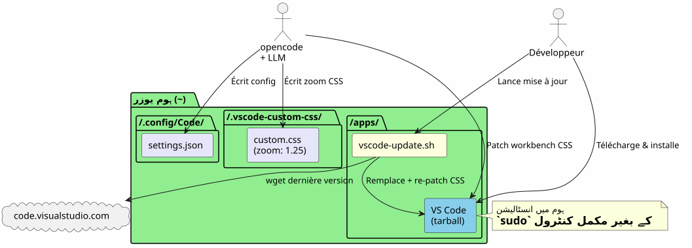
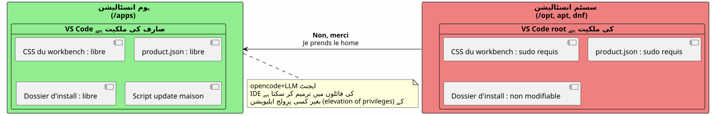
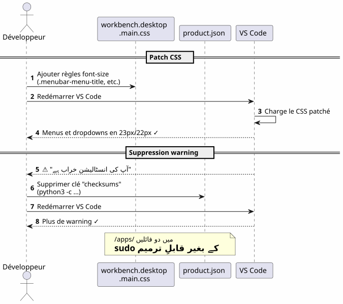
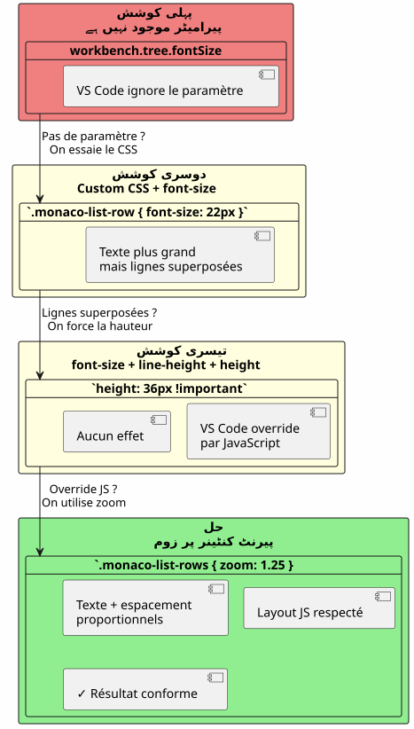
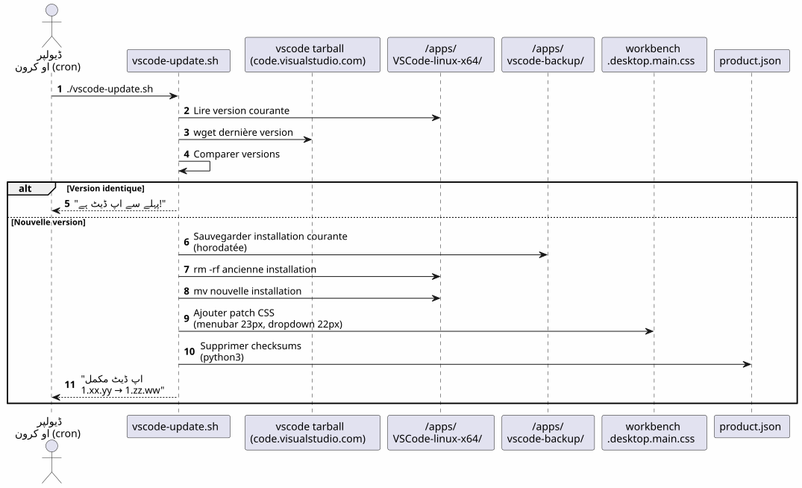
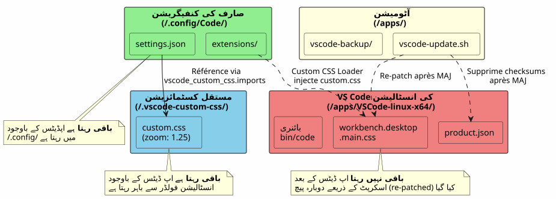
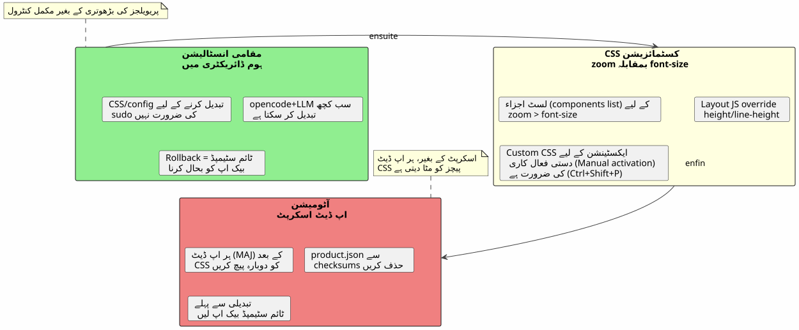

ہوم میں VS Code: لوکل انسٹالیشن اور sudo کے بغیر فونٹس کی کسٹمائزیشن
شائع شدہ: 17 April 2026
وقت پڑھنے کا : 8 minutes
VS Code کو ان میں کیوں انسٹال کریں`/opt`یا via`apt`جب آپ اسے apne home میں رکھ سکتے ہیں اور apne IDE کو کھیل کا میدان بن سکتے ہیں، کبھی بھی ٹائپ نہیں کرتے۔sudo? یہی ایک مقامی انسٹالیشن کی کہانی ہے، جس کے بعد مینو اور فائل ایکسپلورر کے فونٹوں کو بڑھانے کے لیے محنتی جنگ جاری رہی۔
- ٹوک
-
[]
مسیر کا جائزہ

کیوں: VS Code گھر میں
نظام کی ان اسٹالیشن کا مسئلہ
VS Code انسٹال ذریعے`apt`, dnf`یا میں/opt`یہ ایپلیکیشن فائلوں کو ریشه کے حقوق کے پیچے بند کر دیتا ہے۔ نیٹیف CSS کی کوئی بھی تبدیلی،product.json`یا انسٹالیشن فولڈر ضرورت رکھتا ہے`sudo.
اب، جب کسی اسے استعمال کرتا ہےopencode(tool CLI اپنی کوڈ پر ایک LLM چلانے کے لیے) ایجنٹ کو کر سکنے کی ضرورت ہے :
-
لکھنا تنصیب فائلوں میں (
~/.config/Code/User/settings.json) — یہ، یہ پہلے سے ہی ہوم میں ہے -
IDE کے ایسیٹس (workbench کی CSS),
product.json) ادوار سیٹنگز کے لیے — یہ، سudo کے بغیر بلاک ہے
حل : ایک مقامی انسیٹلیشن
ہم رسمی tarball آرکائیو ڈاؤنلوڈ کرتے ہیں اور اسے direct طور پر decompress کرتے ہیں داخل`~/apps/`:
mkdir -p ~/apps
cd ~/apps
wget "https://code.visualstudio.com/sha/download?build=stable&os=linux-x64" -O vscode.tar.gz
tar -xzf vscode.tar.gz
rm vscode.tar.gzبائنری اب میں موجود ہے`~/apps/VSCode-linux-x64/bin/code`. کوئی نہیں`sudo`کسی فائل کو پڑھنے، ترمیم کرنے یا بدلنے کے لیے ضروری نہیں ہے زیر`~/apps/VSCode-linux-x64/`.
ملموس فائدے

| فائدہ | تفصیل |
|---|---|
Sudo نہیں |
IDE کے تمام فائلیں صارف کے متعلق ہیں |
CSS کی سست ترمیم |
پچ کیا جا سکتا ہے`workbench.desktop.main.css`امتیازات کی اوپر اٹھانے کے بغیر |
ghar ka update script |
ایک سادہ شیل سکرپٹ خودکار طور پر ڈاؤن لوڈ کرتا ہے، بدلتا ہے اور دوبارہ پچ لگاتا ہے |
عزلہ |
نظام کی ان‑اسٹالیشن ملوث نہیں ہے؛ رول‑بیک = فولڈر حذف کریں |
اصلی منو کی فونٹ کستومائز کریں
نتیجہ
مینیو (File, Edit, View…) اور ڈراپ ڈاؤنز کی ڈیفالٹ فونٹ بہت چھوٹی ہے۔ VS Code اسے تبدیل کرنے کے لیے کوئی سِٹنگ/پارامٹر نہیں فراہم کرتا۔
تقنیت : CSS مستقیم پچ
ہم فائل کے آخر میں CSS شامل کرتے ہیں`workbench.desktop.main.css`:

CSS_FILE="$HOME/apps/VSCode-linux-x64/resources/app/out/vs/workbench/workbench.desktop.main.css"
cat >> "$CSS_FILE" << 'EOF'
.menubar-menu-title{font-size:23px!important}
.menubar>.menubar-menu-button{font-size:23px!important}
.monaco-menu-option{font-size:22px!important;line-height:34px!important}
.monaco-menu .action-label:not(.codicon){font-size:22px!important}
.menubar-menu-items-holder .monaco-menu .action-item .action-label{font-size:22px!important}
EOFصحت انتباہ حذف کریں
VS Code apni files ki taghyīrāt ka izhar karta hai aur ek banner dikhata hai "Your installation is corrupt". Iss se bachne ke liye, hum checksums ko hata dete hain.product.json:
import json
product_json = "$HOME/apps/VSCode-linux-x64/resources/app/product.json"
with open(product_json, 'r') as f:
data = json.load(f)
data.pop('checksums', None)
with open(product_json, 'w') as f:
json.dump(data, f, indent=2)ریسٹارت کے بعد warnings نہیں ہیں اور منو واضح ہیں۔
ایکسپلورر پین کی فونٹ کو ترتیب دیں — جگڑا
آزمائش 1 : پیرامیٹر جو موجود نہیں
ہم اصل پارامٹر کو پہلے کوشش کرتے ہیں`workbench.tree.fontSize`میں`settings.json`(Empty output)
{
"workbench.tree.fontSize": 20
}نتیجہ :کوئیاثر نہیں. یہ سیٹنگ VS Code میں موجود نہیں ہے۔ دلیل یہ ہے کہ معترف نہیں ہونے والی سیٹنگها خاموشی سے نادیده کر دی جاتی ہیں۔
تجربہ 2 : کاسٹم CSS and JS Loader ایکسٹینشن
ہم ایکسٹنشن انسیٹ کر رہے ہیں`be5invis.vscode-custom-css`:
~/apps/VSCode-linux-x64/bin/code --install-extension be5invis.vscode-custom-cssہم ایک CSS فائل بناتے ہیں`~/.vscode-custom-css/custom.css`explorer کے عناصر کو نشانہ بنانے والے سلیکٹر کے ساتھ :
.monaco-tree-rows .monaco-tree-row,
.sidebar .monaco-list-row,
.explorer-viewlet .monaco-list-row,
.monaco-list-row .monaco-icon-label {
font-size: 22px !important;
line-height: 36px !important;
}اور ہم اس فائل کو سٹنگز میں رفرنس کرتے ہیں :
{
"vscode_custom_css.imports": [
"file:///home/user/.vscode-custom-css/custom.css"
]
}نتیجہ :تبدیلات لاگو نہیں ہوتی.
پھنساں : ہر بار ایکسٹینشن فعال کرنا ضروری ہے
ایکسٹنشن کی دستاویز اس اہم نک پر خفیف ہے: ہر CSS custom کی ترمیم کے بعد، کرنا ضروری ہےضروری طور پرپالیٹ سے کمانڈ چلائیں :
-
Ctrl+Shift+P→ ٹائپ کرناکاستم CSS اور JS فعال کریں -
VS Code ایک ریستارت کی درخواست کرتا ہے → قبول کریں
اس مرحلے کے بغیر، CSS کبھی بھی IDE میں انجیکٹ نہیں ہوتا۔
تجربہ 3 : لائنز ایک دوسرے کے اوپر آ جاتی ہیں
بھی ساتھ`font-size: 22px` et line-height: 36px, ذیل والے حروف (g, p, f, b) قربانی خطوط پر پھیل جاتے ہیں. ہم اضافہ کرنے کی کوشش کر رہے ہیں`height` et min-height:
.monaco-list-row {
height: 36px !important;
min-height: 36px !important;
}نتیجہ:کوئی تبدیلی نہیں. VS Code لائنوں کی اونچائیں جاواسکریپٹ میں حساب کرتا ہے اور CSS کی قيمتیں اووررائیڈ کرتا ہے۔
حل: zoom پر والد کنٹینر

جاواسکریپٹ کے لاء آؤٹ کے مقابلے میں لڑنے کی جگہ ہم خاصیت استعمال کرتے ہیں`zoom`لائنوں کے کنٹینر پر:
.explorer-viewlet .monaco-list-rows,
.sidebar .monaco-list-rows {
zoom: 1.25;
}`zoom`یہ کٹینر کے رینڈرنگ — متنی اور فاصلہ — کویکساں طور پر بڑھاتا ہے، VS Code کے جاواسکریپٹ انجن کے حساب سے لگئی لاوٹ کو توڑا نہیں۔ عامل 1.25 تقریباً 13px سے 16px کے转换 کے مساوی ہے۔
نتیجہ :فائل کے نام اب پڑھنے کے قابل ہیں، اور لائن صحیح طور پر فاصلے رکھتی ہیں.
سیلیکٹورز کا خلاصہ اور جو کام کرتا ہے
| اپروچ | CSS | نتیجہ |
|---|---|---|
|
|
بڑا متن لیکن overlap والی لائنیں |
|
|
کوئی اثر نہیں (override JS) |
|
|
ناجح — متن + فاصلہ نسبتی |
خودکار اپ ڈیٹ سکرپٹ

مشکل
VS Code کے اپ ڈیٹ ہونے پر، وہ انسٹال کرنے والے فولڈر کو بدل دیتا ہے اورتمام CSS پچوں کو حذف کرتا ہےہر بار دستی طور پر ترمیمات کو دوبارہ لاگو کرنا ضروری ہے۔
اسکرپٹ `vscode-update.sh
ہم بناتے ہیں`~/apps/vscode-update.sh`(Empty output)
#!/bin/bash
set -e
VSCODE_DIR="$HOME/apps/VSCode-linux-x64"
BACKUP_DIR="$HOME/apps/vscode-backup"
TEMP_DIR="/tmp/vscode-update"
MENUBAR_FONT_SIZE="23px"
DROPDOWN_FONT_SIZE="22px"
echo "=== VS Code Local Updater ==="
CURRENT_VERSION=$("$VSCODE_DIR/bin/code" --version 2>/dev/null | head -1)
echo "Current version: $CURRENT_VERSION"
echo "Downloading latest VS Code..."
mkdir -p "$TEMP_DIR"
wget -q "https://code.visualstudio.com/sha/download?build=stable&os=linux-x64" \
-O "$TEMP_DIR/vscode.tar.gz"
echo "Extracting..."
mkdir -p "$TEMP_DIR/extracted"
tar -xzf "$TEMP_DIR/vscode.tar.gz" -C "$TEMP_DIR/extracted"
NEW_VERSION=$("$TEMP_DIR/extracted/VSCode-linux-x64/bin/code" \
--version 2>/dev/null | head -1)
echo "New version: $NEW_VERSION"
if [ "$CURRENT_VERSION" = "$NEW_VERSION" ]; then
echo "Already up to date!"
rm -rf "$TEMP_DIR"
exit 0
fi
echo "Backing up current installation..."
mkdir -p "$BACKUP_DIR"
cp -r "$VSCODE_DIR" "$BACKUP_DIR/VSCode-linux-x64-$(date +%Y%m%d-%H%M%S)"
echo "Updating..."
rm -rf "$VSCODE_DIR"
mv "$TEMP_DIR/extracted/VSCode-linux-x64" "$VSCODE_DIR"
rm -rf "$TEMP_DIR"
CSS_FILE="$VSCODE_DIR/resources/app/out/vs/workbench/workbench.desktop.main.css"
echo "Re-applying custom CSS patch \
(menubar=${MENUBAR_FONT_SIZE}, dropdown=${DROPDOWN_FONT_SIZE})..."
cat >> "$CSS_FILE" << CSSEOF
.menubar-menu-title{font-size:${MENUBAR_FONT_SIZE}!important}\
.menubar>.menubar-menu-button{font-size:${MENUBAR_FONT_SIZE}!important}\
.monaco-menu-option{font-size:${DROPDOWN_FONT_SIZE}!important;\
line-height:34px!important}\
.monaco-menu .action-label:not(.codicon)\
{font-size:${DROPDOWN_FONT_SIZE}!important}\
.menubar-menu-items-holder .monaco-menu .action-item .action-label\
{font-size:${DROPDOWN_FONT_SIZE}!important}
CSSEOF
PRODUCT_JSON="$VSCODE_DIR/resources/app/product.json"
if [ -f "$PRODUCT_JSON" ]; then
echo "Removing checksums to prevent integrity warning..."
python3 -c "
import json
with open('$PRODUCT_JSON','r') as f: data=json.load(f)
data.pop('checksums', None)
with open('$PRODUCT_JSON','w') as f: json.dump(data,f,indent=2)
print('Done.')
"
fi
echo "=== Update complete: $CURRENT_VERSION -> $NEW_VERSION ==="اسکریپٹ :
-
آخری مستحکم ورژن ڈاؤنلوڈ کریں
-
جائزہ لیں کہ آیا ورژن موجودہ سے مختلف ہے
-
موجودہ انسٹالیشن (ٹائم اسٹیمپ شدہ) میں محفوظ کریں`~/apps/vscode-backup/`
-
انسٹالنگ فولدہ بدل دیں
-
دوبارہ لاگو کریںCSS کا پچ بنیادی منو
-
چیک سمرز حذف کریں de `product.json`انٹیگریٹی warning سے بچنے کے لئے
نوٹ: ایکسپ्लورر پین کی کستمائزیشنز، Custom CSS ایسٹینشън اور فائل کے ذریعے`~/.vscode-custom-css/custom.css`یہ اپ ڈیٹس سے بچ جاتے ہیں کیونکہ وہ انسٹالیشن فولدر کے باہر رہتے ہیں۔
ملحق فائلز — مجموعی جائزہ

| راستہ | کردار | کیا یہ اپ ڈیٹس کے بعد بھی بچتا ہے؟ |
|---|---|---|
|
IDE کی انسٹالیشن |
نہیں (بدل شدہ) |
|
CSS workbench (منو، ڈراپ ڈاؤن) |
نہ (اس سکرپٹ سے دوبارہ پچ) |
|
انٹیگریٹی کے چیک سمر |
نہیں (اسکرپٹ سے دوبارہ صاف) |
|
خودکار اپ ڈیٹ اسکریپٹ |
ہاں |
|
صارف کی ترتیبات (fontSize, custom CSS) |
ہاں |
|
CSS کاستم Explorer کے لیے (زوم) |
ہاں |
سیخے سباقات

گھر میں انسٹال کرنے سے سب چیزیں آزاد ہو جاتی ہیں
ایک مقامی انسٹالیشن میں`~/apps`VS Code پر مکمل اختیار دیتا ہے :
-
نہیں`sudo`CSS یا کنفیگریشن کو ترمیم کرنے کے لیے
-
opencode+LLM ایجنٹ IDE کے کنفیگ فائلیں اور ایسیٹس میں لکھ سکتا ہے
-
ساده رول بیک : بیکاپ کی ٹائم اسٹیمپڈ بحال کریں
zoom` > font-size لیسٹ کامپوننٹس کے لیے
VS Code JavaScript کے ذریعے لائنوں کی اونچے کو کنٹرول کرتا ہے۔ تحرير کریں`font-size`لی آؤٹ انجن کی فراہم کردہ اونچائی پر ہاتھ لگانے سے ممانعت ہونے پر یہ متنیں بناتی ہیں جو باہر نکلتے ہیں۔ خاصیت`zoom`والد کنٹینر پر سب کو تناسباً بڑھایا جاتا ہے اور اس مسئلے سے بچا جاتا ہے۔
Custom CSS ایکسٹینشن کو صریح اکٹیویشن کی ضرورت ہوتی ہے
یہ "set and forget" پارامیٹر نہیں ہے۔ CSS custom فائل کی ہر تبدیلی کے بعد "Enable Custom CSS and JS" کو کمانڈ پیلٹ سے دوبارہ چلانا ضروری ہے (Ctrl+Shift+P)
ایک اپ ڈیٹ سکرپٹ ضروری ہے
اسکرپٹ کے بغیر، VS Code کی ہر اپ ڈیٹ workbench کے CSS patches کو حذف کر دیتی ہے۔ اسکرپٹ`vscode-update.sh`یہ ڈاؤنلوڈ، تعویض، دوبارہ پیچنگ اور چیک سمرماتس کی صافکاری خودکار طور پر کرتا ہے۔
جلدی حوالے
-
VS Code ڈاؤنلوڈ: https://code.visualstudio.com/Download
-
ایسٹینشن کسٹم CSS اور JS لوڈر :`be5invis.vscode-custom-css`
-
VS Code کا ایشو Explorer کے فونٹ کے لیے ایک نativ (نظامی) سیٹنگ مانگا رہا ہے :https://github.com/microsoft/vscode/issues/149[github.com/microsoft/vscode#149]